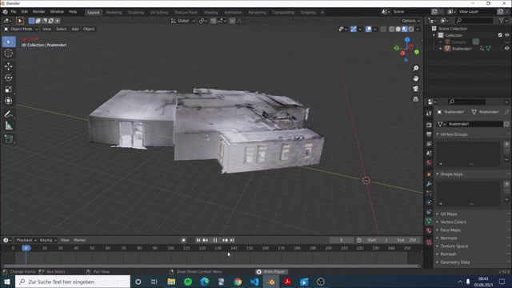

This project was developed under the supervision of Prof. Dr.-Ing. habil. Hein as part of
the project management module. Prof. Dr.-Ing. habil. Hein and Prof. Wurll jointly head the Robotics and Automation Laboratory.
This was originally located in the K building of the university and is now (summer semester 2021) moving to the new campus of the
university (HKA 2030+/ TP). The new campus will thus be home to the new Master's programme "Robotics and Artificial Intelligence in
Production" and the Robotics and Automation Laboratory
, which will enable students to learn and research in a practical way in the future.
We are a group of four students. The idea of us and our professors was to capture the new premises of the laboratory
with the help of a 3D scanner.
Our work should only be a basis on which future teams can build.
We used the followingscanner for our scan. This enabled us to create the following file:
If you want to check out our Project you can take a look at our virtual tour. Just click on the link and enjoy.
We have implemented two controls. Feel free to try out both and give us your feedback on what you liked more.
Our first controls is the First Person Control. This lets you navigate pretty freely around the scene.
You can navigate yourself using the following commands:
- You can change your view by moving your mouse.
- Click on the left mouse button to move forward.
- Click on the right mouse button to move backwards.
Our second controls is the Orbit Control. This lets you orbit around a targeted object.
Use the following commands to use it:
- Use your left mouse button to rotate the object.
- Use your right mouse button to move the camera around the scene.
- Use your mouse wheel to zoom in and out.
Thank you very much for visiting our website. We would really appreciate it if you'd take a minute and fill out this survey.